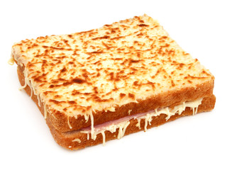

Croque-Monsieur

Un croque fondant et moelleux à souhait...
Pour cette recette super rapide vous utiliserez essentiellement un saladier et un four
Cette recette a été validée à plusieurs reprises par Elsa et Nathalie
Ingrédients
- 1 pain de mie en tranches carrées
- 200 g de gruyère rapé
- 1 pot de crême fraiche épaisse
- 6 tranches de jambon blanc
Étapes
- Mélanger dans un saladier la crème, le gruyère, saler et poivrer.
- Étaler le mélange sur une tranche de pain, poser dessus 1/2 tranche de jambon, et une autre tranche de pain avec le même mélange.
- Mettre au four à mi-hauteur Th7 pendant 20 mn.